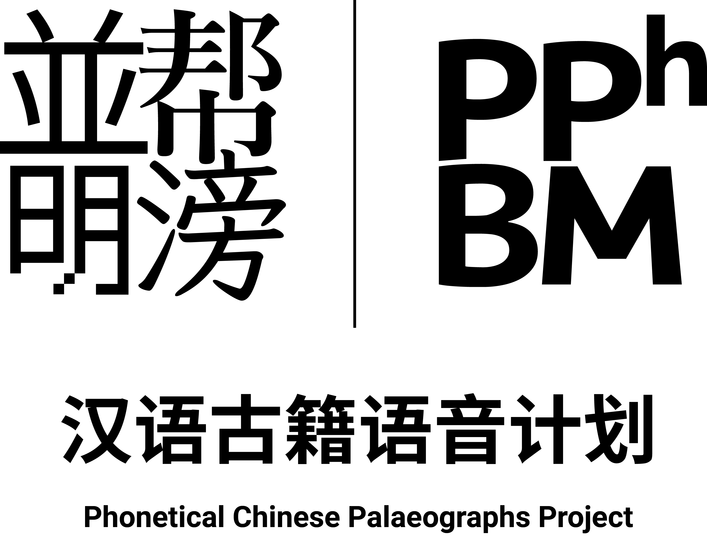

我们
- 从可靠的信息来源抓取已经电子化整理的古籍, 获取未整理的古籍(及扫描件)并将其进行电子化整理并存储进数据库;
- 将已经电子化整理的古籍以年代为时间单位分类;
- 将我们所存档的电子化古籍注以音韵信息, 包括但不限于韵书次目, 常见反切注音, 各时期发音的拉丁化注音, 各家构拟的各时期发音的国际音标 (IPA);
- 将存档的数据格式化并在互联网上提供查询/显示页面.
我们将处理, 整理并储存:
- 古籍原文 [古字形, 现代正体(台湾), 现代简体(大陆)]
- 韵书数据
- 志愿者提供的构拟发音录音
- 其他可能有关数据
以及
- 1911 年之前的汉语文字资料
- 可以反映 1949 年之前汉语语音的非汉语资料
- 可以反映 1911 年之前的汉语语音的开放版权的音频/视频资料
接下来做需要做的以及我们正在做的
- 完成 诗 的录入, Feb 20, 2016;
- 完成 广韵 的导入, Jan 15, 2016;
- 完成 上古音韵 的导入, Feb 1, 2016;
- 网站首页上线, Jan 15, 2016;
- 韵书查询系统上线, Feb 15, 2016;
- 文字资料查询系统上线, Mar 15, 2016.
上述日期为预计完成时间.
下一阶段任务将于上述任务完成后公布.
新年好.
这个项目由一群想要获取更有趣的 IPA 音节的脑洞少组成.这群少年处理古籍并标上由各音韵学家构拟的古汉语发音之国际音标.
- 帮滂並明的数据由你这样的志愿者维护.
- 大部分汉字在韵书中只有一个读音, 我们的计算机自动化程序将会自动填上, 这些自动化生成的文本需要进行人工校对.
- 剩下的多音字之小韵就需要你按照汉字意义和上下文进行选择.
- 同时, 我们需要大量的自由版权的录音, 你也可以录制某段选定文本的构拟读音并上传.
如果你有兴趣并想要帮助我们补全这个数据库, 请联系我们:
Twitter: @oranzhang, @arthur2e5
Weibo: @奥软奥软, @Arthur2e5-已挂起
Email: orancho#outlook.com, arthur2e5@aosc.io
所有完成处理的数据将在 Github 公开.